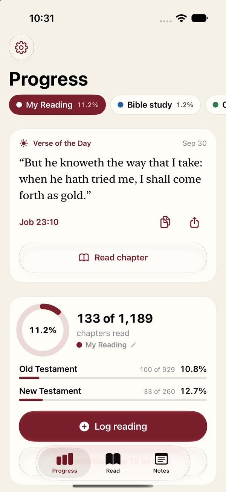
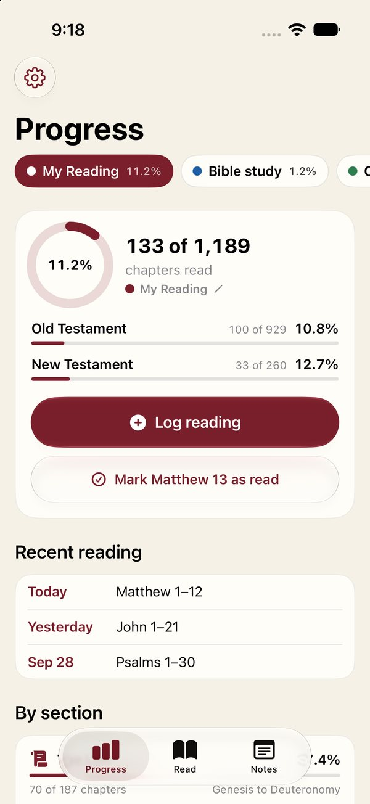
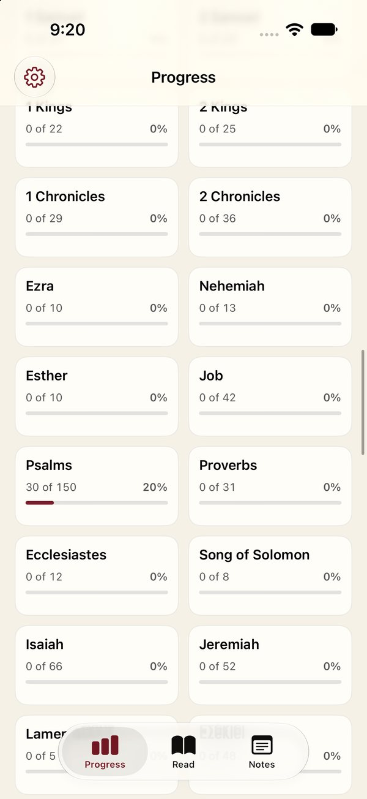
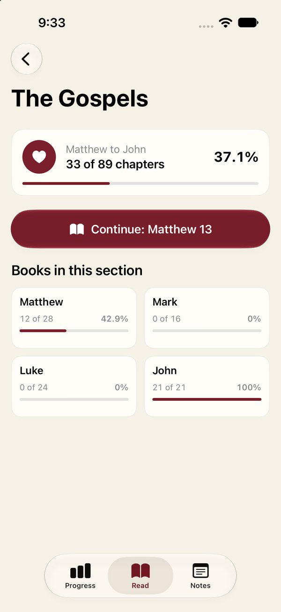
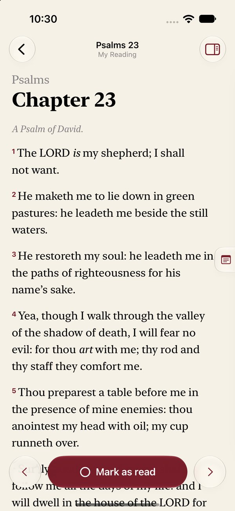
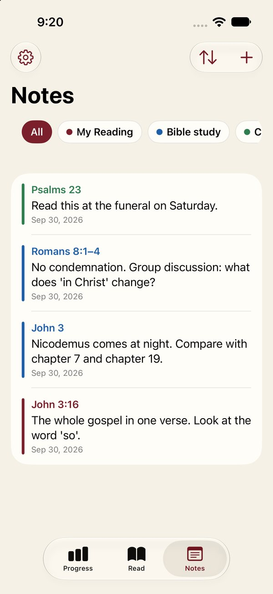
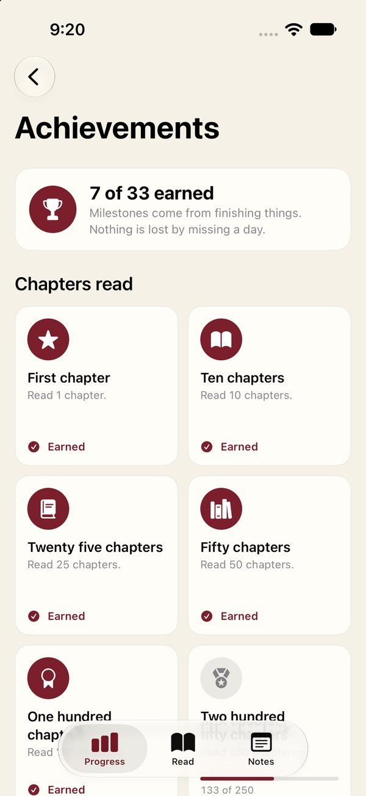
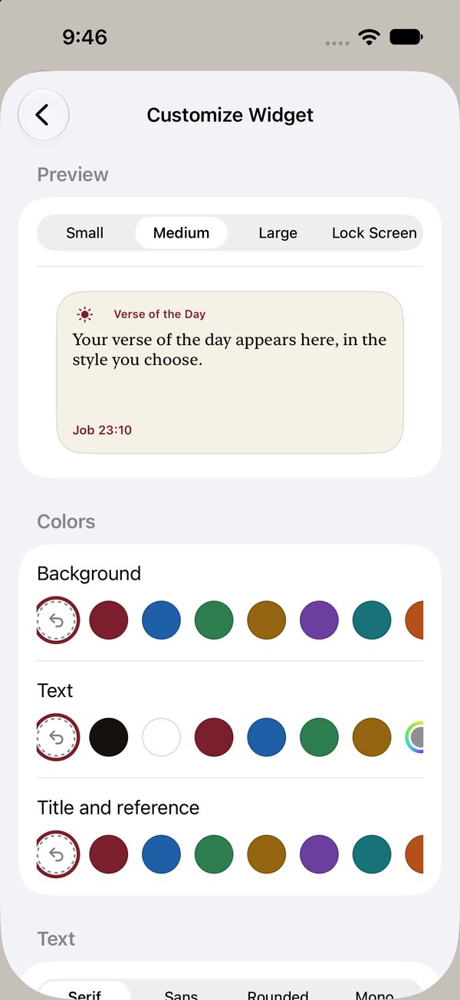
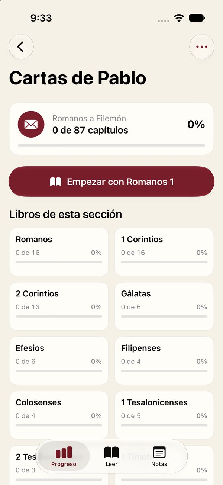
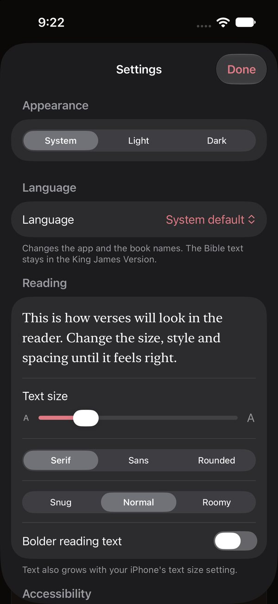

1
The Screens
Ten screens from the app on the iPhone simulator, one for each key feature, with the real King James text. Notes and progress are sample data.










2
What It Does
- A tracker first. Tap any chapter to mark it read, or log a range of chapters with a date, wherever you read it.
- More than one tracker. Keep a personal reading and a Bible study apart, each with its own color and its progress by book, testament and ten sections.
- Notes where they belong. A notes panel slides out beside any chapter or verse, and every note is listed on the Notes tab.
- A verse every day. A Verse of the Day on the front screen and in a widget you can restyle.
- Made to be comfortable. English and Spanish menus and book names, light and dark, and reading and accessibility settings.
3
How It Is Built
Two rules shaped the code: the words must never be wrong, and the app must never make you wait.
- The text ships inside the app. All 31,102 verses are bundled and load on a background thread at launch, so the app never waits and needs no connection.
- Checked twice. The converter that builds the text file stops unless all 31,102 verses check out, and the app refuses a file whose books or chapters do not match the canon.
- Your data stays separate. Trackers, read marks and notes live in SwiftData, set up so iCloud sync can be switched on later.
- Public domain words. The King James text and the Verse of the Day use public domain wording, so no license is needed.
/// Holds the Bible text. It reads `kjv.json` from the app bundle on a background thread at launch, so the
/// screen never waits on 31,000 verses. The file is 66 books, each a list of chapters, each a list of verse
/// strings with verse 1 first. A file whose shape does not match the canon is refused outright, so a damaged
/// copy shows an error and never the wrong words.
// ...
@MainActor @Observable
final class ScriptureLibrary {
static let shared = ScriptureLibrary()
// ...
private init() {
Task {
let result = await Task.detached(priority: .userInitiated) { ScriptureLibrary.load() }.value
apply(result)
}
}
// ...
nonisolated private static func shapeIssue(_ decoded: [[[String]]]) -> String? {
guard decoded.count == Canon.books.count else {
return "The KJV text file has \(decoded.count) books instead of \(Canon.books.count)."
}
for book in Canon.books {
let chapters = decoded[book.id - 1]
guard chapters.count == book.chapters else {
return "\(book.name) has \(chapters.count) chapters in the text file instead of \(book.chapters)."
}
if let empty = chapters.firstIndex(where: { $0.isEmpty }) {
return "\(book.name) \(empty + 1) has no verses in the text file."
}
}
return nil
}4
Milestones, Not Streaks
Streaks work for language apps, but a missed day of Bible reading should never turn into guilt. So the app has milestones instead: they come from finishing things, and nothing is lost by missing a day.
Five groups: chapters read, share of the Bible, books finished, sections of the Bible, and more.
/// Milestones come from finishing things. There are no streaks and nothing is lost by missing a day.
/// They are worked out from the current read marks, so clearing a chapter can unearn one.
enum Achievements {
static func all(_ stats: ReadStats) -> [Achievement] {
var list: [Achievement] = []
// ...
let chapterMarks: [(count: Int, title: Text, symbol: String)] = [
(1, Text("First chapter"), "star.fill"),
(10, Text("Ten chapters"), "book.fill"),
(25, Text("Twenty five chapters"), "text.book.closed.fill"),
(50, Text("Fifty chapters"), "books.vertical.fill"),
(100, Text("One hundred chapters"), "rosette"),
(250, Text("Two hundred fifty chapters"), "medal.fill"),
(500, Text("Five hundred chapters"), "trophy.fill"),
(750, Text("Seven hundred fifty chapters"), "crown.fill"),
(1000, Text("One thousand chapters"), "sparkles"),
]
// ...
for mark in chapterMarks {
list.append(Achievement(
id: "chapters-\(mark.count)",
group: .chapters,
title: mark.title,
detail: mark.count == 1 ? Text("Read 1 chapter.") : Text("Read \(mark.count) chapters."),
symbol: mark.symbol,
progress: min(Double(stats.totalRead) / Double(mark.count), 1),
value: Text("\(min(stats.totalRead, mark.count)) of \(mark.count)")
))
}